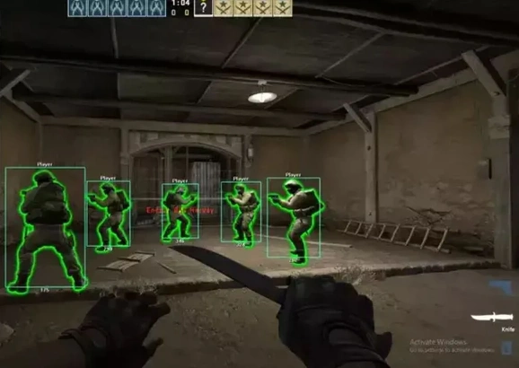
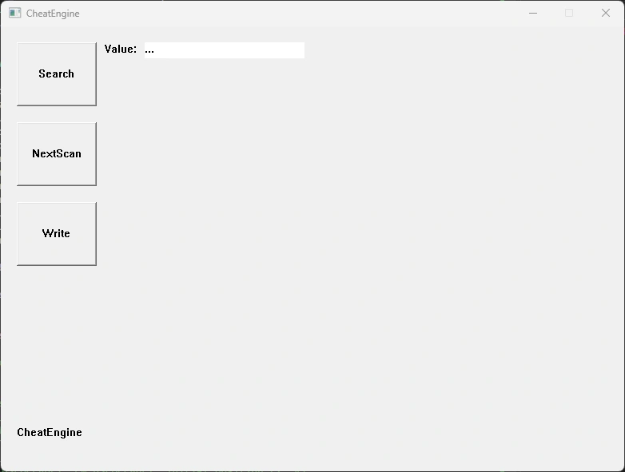
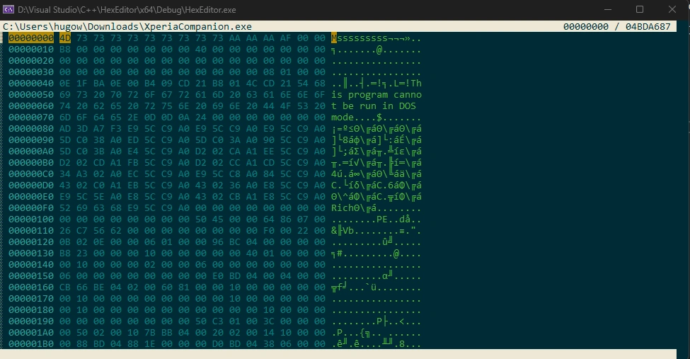
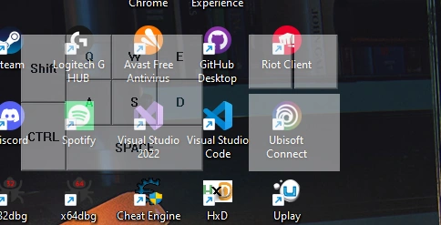

Interactive Gaming Tools

CS:GO Aimbot
A C++ project analyzing game memory and adjusting aiming mechanics for precision improvement.
Memory Scanner
A debugging tool in C++ that scans and modifies process memory, useful for reverse engineering.
Hex Editor
A C++ application for inspecting and modifying binary file data, aiding debugging and file analysis.
Input Overlay
A real-time visual input display for keyboard and mouse interactions, useful for stream overlays.
DLL Injection
A tool for injecting DLLs into running processes to extend functionality or perform debugging tasks.